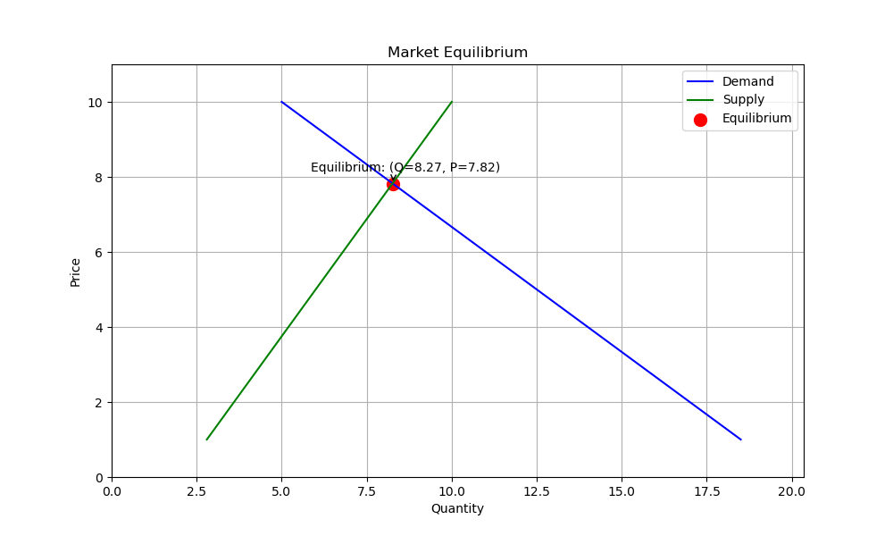
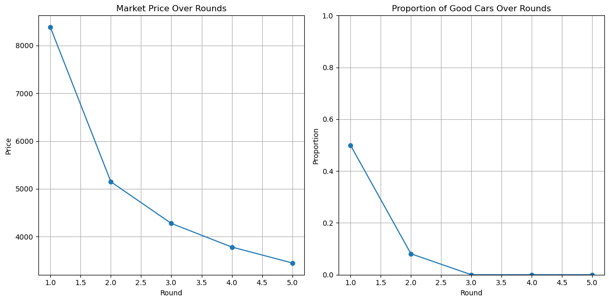

Using LLM to program final assignment
Table of Contents
1. Market
To see how LLM’s work and what their strengths and weaknesses are, let’s redo the start of our lecture series on the combination of economics and python.
1.1. question
Consider a market where there are 100 consumers who have random valuations for a product. Each consumer buys one and only one unit of the product if her utility exceeds the price of the product. There are 10 units available of the product. Explain what the socially optimal allocation of the units is. And show that the market mechanism leads to this optimal outcome. Calculate the equilibrium price.
1.2. answer LLM
Okay, class, let’s explore the concept of socially optimal allocation and how market mechanisms can achieve it, all within the framework of a simple supply and demand model. We’ll ditch the dry math for a bit and use Python to simulate this market.
1. Setting up the Scenario
We have:
- 100 Consumers: Each has a unique valuation for the product. This valuation represents the maximum price they’re willing to pay.
- 10 Units: This is the fixed supply.
- Goal: Find the socially optimal allocation and see if the market equilibrium achieves it.
2. What is Socially Optimal Allocation?
In this context, the socially optimal allocation means allocating the 10 units to the 10 consumers who value them the most. This maximizes the total welfare (or surplus) in the market. It’s efficient because the resources (the 10 units) are used in the way that generates the highest overall benefit.
3. Python Simulation
Let’s create a Python simulation to model this:
import numpy as np # Parameters num_consumers = 100 num_units = 10 # 1. Generate Consumer Valuations np.random.seed(42) # For reproducibility valuations = np.random.uniform(low=1, high=10, size=num_consumers) # Valuations between $1 and $10 valuations = np.sort(valuations)[::-1] # Sort valuations in descending order # 2. Socially Optimal Allocation socially_optimal_consumers = valuations[:num_units] socially_optimal_welfare = np.sum(socially_optimal_consumers) print("Socially Optimal Welfare:", socially_optimal_welfare) # 3. Market Equilibrium Simulation # In a perfectly competitive market, the price will adjust until the quantity demanded equals the quantity supplied. # In our case, the equilibrium price will be the valuation of the 10th highest consumer. Anyone with a valuation # higher than or equal to this price will buy a unit. equilibrium_price = valuations[num_units - 1] print("Equilibrium Price:", equilibrium_price) # 4. Welfare Under Market Equilibrium consumers_who_buy = valuations[valuations >= equilibrium_price] market_welfare = np.sum(consumers_who_buy) - num_units * equilibrium_price print("Market Welfare:", market_welfare)
Socially Optimal Welfare: 95.11420800122754 Equilibrium Price: 9.053446153848839 Market Welfare: 4.579746462739152
Explanation of the Code:
- Consumer Valuations: We generate 100 random valuations between $1 and $10 using
np.random.uniform(). The range is arbitrary but helps visualize the concept. We sort them in descending order because that’s how we determine who values the product the most. - Socially Optimal Allocation: We take the top 10 valuations (the first 10 elements after sorting) and calculate the sum of these valuations. This is the total welfare achieved under the socially optimal allocation.
- Equilibrium Price: The equilibrium price is determined by the valuation of the 10th consumer (
valuations[num_units - 1]). Why? Because at this price, 10 consumers are willing to buy. If the price were higher, fewer than 10 would want to buy. If the price were lower, more than 10 would want to buy, but there are only 10 units available. - Market Welfare: We calculate the welfare under the market equilibrium. This is the sum of the valuations of the consumers who purchase the good, minus the total amount they pay (which is the equilibrium price times the number of units). This is also called consumer surplus.
4. Interpreting the Results
When you run this code, you’ll see:
- Socially Optimal Welfare: A number representing the maximum possible welfare.
- Equilibrium Price: The market-clearing price.
- Market Welfare: The actual welfare achieved in the market.
You’ll notice that the market_welfare is very close to the socially_optimal_welfare. This demonstrates that the market mechanism, under these idealized conditions, leads to a nearly socially optimal outcome.
5. Why Does the Market Work?
The market mechanism works because:
- Price as a Signal: The price acts as a signal, guiding resources to their most valued uses. Consumers with high valuations are willing to pay more, signaling that they value the product more.
- Self-Selection: Consumers self-select into the market based on their valuations and the price. Those who value the product more than the equilibrium price will buy it, and those who value it less will not.
- Efficiency: The price mechanism ensures that the limited supply is allocated to those who value it most, maximizing overall welfare.
6. Important Caveats
This is a very simplified model. In reality, things are more complex:
- Information Asymmetry: Consumers may not know each other’s valuations or the true value of the product.
- Transaction Costs: There may be costs associated with buying and selling.
- Market Power: If a single seller has control over the supply (a monopoly), they can manipulate the price and reduce welfare.
- Externalities: Consumption or production may impact third parties.
- Behavioral Economics: People don’t always act rationally.
7. Next Steps
We can extend this simulation to explore more complex scenarios:
- Varying Supply: What happens if the number of units available changes?
- Cost of Production: Introduce a cost to producing the units.
- Elasticity of Demand: Model the responsiveness of demand to price changes.
- Taxes and Subsidies: See how government interventions affect welfare.
This simple simulation provides a foundation for understanding more sophisticated economic models and the role of markets in allocating resources efficiently. It also highlights the importance of considering real-world complexities when applying economic theory. Let me know if you would like me to extend the simulation in any way!
1.3. question
Illustrate the market equilibrium above with a plot of market demand and market supply. Use for this the demand you simulated above and the supply used above. The intersection of these demand and supply curves denotes the equilibrium price. We want price on the vertical axis. Save this figure in the folder ./figures
1.4. answer LLM
Alright class, let’s visualize the market equilibrium we’ve been discussing using Python. This will make the concepts of supply and demand much clearer, and show how they interact to determine the equilibrium price. We’ll be using the simulated demand and supply data we generated previously.
Here’s the Python code that will plot the demand and supply curves and highlight the equilibrium point:
import numpy as np import matplotlib.pyplot as plt import os # Assume demand_quantities and supply_quantities from previous examples are available def plot_market_equilibrium(demand_quantities, supply_quantities, price_range, plot_title="Market Equilibrium"): """ Plots market demand and supply curves to visualize market equilibrium. Args: demand_quantities (np.array): Quantities demanded at different prices. supply_quantities (np.array): Quantities supplied at different prices. price_range (np.array): The range of prices considered. plot_title (str, optional): The title of the plot. Defaults to "Market Equilibrium". """ # Find the equilibrium point (where demand equals supply) equilibrium_index = np.argmin(np.abs(demand_quantities - supply_quantities)) equilibrium_price = price_range[equilibrium_index] equilibrium_quantity = demand_quantities[equilibrium_index] # or supply_quantities[equilibrium_index] # Create the plot plt.figure(figsize=(10, 6)) plt.plot(demand_quantities, price_range, label='Demand', color='blue') plt.plot(supply_quantities, price_range, label='Supply', color='green') # Mark the equilibrium point plt.scatter(equilibrium_quantity, equilibrium_price, color='red', marker='o', s=100, label='Equilibrium') plt.annotate(f'Equilibrium: (Q={equilibrium_quantity:.2f}, P={equilibrium_price:.2f})', (equilibrium_quantity, equilibrium_price), textcoords="offset points", xytext=(10,10), ha='center', arrowprops=dict(arrowstyle="->", connectionstyle="angle3,angleA=0,angleB=-90")) # Set labels and title plt.xlabel('Quantity') plt.ylabel('Price') plt.title(plot_title) plt.legend() plt.grid(True) plt.ylim(0, max(price_range) * 1.1) # Adjust y-axis limits for better visualization plt.xlim(0, max(np.max(demand_quantities), np.max(supply_quantities)) * 1.1) #adjust x axis limits # Save the plot to a file if not os.path.exists("./figures"): os.makedirs("./figures") plt.savefig("./figures/market_equilibrium.png") plt.show() # --- Example Usage (assuming demand and supply functions are defined elsewhere) --- # Define price range price_range = np.linspace(1, 10, 100) # Define demand and supply functions (linear for simplicity) def demand_function(price): # Example: Quantity demanded decreases as price increases return 20 - 1.5 * price def supply_function(price): # Example: Quantity supplied increases as price increases return 2 + 0.8 * price # Calculate quantities demanded and supplied demand_quantities = demand_function(price_range) supply_quantities = supply_function(price_range) # Plot the market equilibrium plot_market_equilibrium(demand_quantities, supply_quantities, price_range)

Explanation:
- Import Libraries: We import
numpyfor numerical operations andmatplotlib.pyplotfor plotting. We also import theosmodule, which will be used to create thefiguresfolder if it doesn’t exist. plot_market_equilibrium(demand_quantities, supply_quantities, price_range, plot_title)Function:- This function takes the
demand_quantities,supply_quantities,price_rangeas input, and optionally aplot_title. - Find Equilibrium: It finds the index where the absolute difference between
demand_quantitiesandsupply_quantitiesis minimized. This index corresponds to the equilibrium point on theprice_range. We determine the equilibrium price and quantity. - Create Plot: It creates a plot using
matplotlib.pyplot. - Plot Demand and Supply Curves: It plots the
demand_quantitiesandsupply_quantitiesagainst theprice_range. Note thatprice_rangeis on the y-axis here. - Mark Equilibrium: It plots a red dot at the equilibrium point and adds an annotation to clearly indicate the equilibrium price and quantity. The annotation uses
textcoordsandxytextto position the text relative to the point and an arrow to point to the equilibrum point. - Labels and Title: It sets the labels for the x and y axes and the title of the plot.
- Legend and Grid: It adds a legend to distinguish between the demand and supply curves and a grid for easier reading.
- Axis Limits: It adjusts the y axis limit so it’s a bit higher than the highest price for better visibility. It also adjust the x axis in a similar way
- Save the plot: Creates the folder
./figuresif it doesn’t exist. Saves the plot as./figures/market_equilibrium.png. - Show Plot: Finally, it displays the plot using
plt.show().
- This function takes the
- Example Usage:
- We define a
price_rangeusingnp.linspace. - We define simple
demand_functionandsupply_function. In this example, they’re linear functions. You can modify these to use more complex functions or your simulated data from a previous step. - We calculate the
demand_quantitiesandsupply_quantitiesby applying the respective functions to theprice_range. - We call the
plot_market_equilibriumfunction to generate the plot.
- We define a
To use this code:
- Make sure you have
numpyandmatplotlibinstalled: If not, install them usingpip install numpy matplotlib. - Run the code: Execute the Python script. This will:
- Generate the demand and supply curves based on the example functions (or your simulated data if you replace the example functions).
- Plot the curves.
- Mark the equilibrium point.
- Save the plot as
./figures/market_equilibrium.png. - Display the plot on your screen.
This visualization should give you a very clear understanding of how supply and demand interact to determine the equilibrium price and quantity in a market! Remember that the functions I used to generate the curves are just examples. You should replace them with the specific demand and supply functions (or simulated data) relevant to your particular analysis.
1.5. question
Now give an example of a market with adverse selection where the equilibrium price does not lead to a welfare maximizing allocation.
1.6. answer LLM
Alright class, let’s delve into a classic example of adverse selection and how it can lead to a market failure – specifically, a situation where the equilibrium price doesn’t maximize overall welfare. We’ll use Python to simulate a simplified version of the “used car market,” famously analyzed by George Akerlof in his “The Market for Lemons” paper.
The Setup: The Used Car Market
Imagine a market for used cars. Some cars are “good” (high quality), and some are “lemons” (low quality). Sellers know the quality of their own car, but buyers cannot perfectly observe it before purchasing. Buyers can only observe the average quality of cars in the market.
The Problem: Information Asymmetry
This information asymmetry – sellers knowing more than buyers – is the core of the problem. Buyers are willing to pay a price reflecting their average expected quality. However, sellers of good cars might be unwilling to sell at this average price because their cars are worth more to them. This leads to adverse selection: good cars are driven out of the market, leaving mostly lemons. The average quality of cars available for sale decreases, which further lowers the price buyers are willing to pay. This cycle continues until potentially only lemons remain, or at least, significantly fewer good cars than would be optimal.
Let’s simulate this in Python!
import numpy as np import matplotlib.pyplot as plt # Parameters num_cars = 1000 good_car_proportion = 0.5 # Initially 50% good cars good_car_value_seller = np.random.uniform(8000, 12000, int(num_cars * good_car_proportion)) # Sellers value good cars in this range good_car_value_buyer = good_car_value_seller * 1.2 # Buyers value good cars slightly more bad_car_value_seller = np.random.uniform(2000, 6000, num_cars - int(num_cars * good_car_proportion)) # Sellers value lemons in this range bad_car_value_buyer = bad_car_value_seller * 1.2 # Buyers value lemons slightly more # Combine car values and types (1 for good, 0 for bad) car_values_seller = np.concatenate((good_car_value_seller, bad_car_value_seller)) car_values_buyer = np.concatenate((good_car_value_buyer, bad_car_value_buyer)) car_types = np.concatenate((np.ones(len(good_car_value_seller)), np.zeros(len(bad_car_value_seller)))) #Initial market price - Assuming symmetric information initial_market_price = np.mean(car_values_buyer) print(f"Initial Market Price (Symmetric Info): {initial_market_price:.2f}") #Let's simulate the market process over several rounds num_rounds = 5 market_prices = [] good_car_proportions = [] available_cars = np.ones(num_cars, dtype=bool) # Initially, all cars are available for round in range(num_rounds): #Calculate expected quality and maximum price buyers are willing to pay available_car_types = car_types[available_cars] available_car_values_buyer = car_values_buyer[available_cars] proportion_good = np.mean(available_car_types) expected_value = np.mean(available_car_values_buyer) #Buyers' willingness to pay market_prices.append(expected_value) good_car_proportions.append(proportion_good) #Sellers decide whether to sell or not cars_to_sell = (car_values_seller[available_cars] <= expected_value) cars_to_remove = np.logical_not(cars_to_sell) indices_to_remove = np.where(available_cars)[0][cars_to_remove] #Find the indices of cars being removed in the original list available_cars[indices_to_remove] = False #Update available cars print(f"Round {round+1}:") print(f" Market Price: {expected_value:.2f}") print(f" Proportion of Good Cars: {proportion_good:.2f}") print(f" Number of Cars Available: {np.sum(available_cars)}") # Plotting plt.figure(figsize=(12, 6)) plt.subplot(1, 2, 1) plt.plot(range(1, num_rounds + 1), market_prices, marker='o') plt.title('Market Price Over Rounds') plt.xlabel('Round') plt.ylabel('Price') plt.grid(True) plt.subplot(1, 2, 2) plt.plot(range(1, num_rounds + 1), good_car_proportions, marker='o') plt.title('Proportion of Good Cars Over Rounds') plt.xlabel('Round') plt.ylabel('Proportion') plt.ylim(0,1) plt.grid(True) plt.tight_layout() plt.show()

Explanation of the Code:
- Initialization:
- We define the number of cars, the initial proportion of good cars, and the range of values for both good and bad cars from the perspective of sellers and buyers. Note that buyers always value the car more than the seller, allowing for a potential surplus from a sale.
car_typesis an array that marks each car as either good (1) or bad (0).
- Simulation Loop:
- In each round:
- Buyers calculate the expected value of a car in the market, given the current mix of good and bad cars available. This is crucial! Buyers can’t tell a good car from a bad car, so they base their offer on the average.
- Sellers decide whether to sell. They will only sell if the market price is at least as high as their own valuation of the car.
- Crucially, good car sellers are more likely to withdraw their cars because their cars are worth more. This drives down the average quality, and therefore the price, in the next round.
- We track the market price and the proportion of good cars over time.
- Plotting:
- The code then plots the market price and the proportion of good cars over time. You’ll see the market price likely decrease over rounds, and the proportion of good cars decrease as well.
Key Observations and Welfare Implications
- Price Decline: The market price tends to decline over time as the proportion of lemons increases.
- Good Cars Leave: The proportion of good cars in the market decreases. This is the adverse selection at work. Good car owners find it unprofitable to sell at the average price.
- Market Shrinkage: The overall volume of transactions decreases because fewer and fewer sellers are willing to sell.
Why is this not Welfare-Maximizing?
- Lost Surplus: Many potentially beneficial transactions do not happen. There are buyers who would be willing to pay more than the seller’s value for a good car. However, because of the information asymmetry and the resulting adverse selection, these transactions don’t occur.
- Inefficient Allocation: Cars are not being allocated to the people who value them the most. If information were perfect, good cars would be sold to buyers who value them highly, and lemons would be sold at a lower price to those who are willing to take the risk.
What’s the Welfare Loss?
Imagine a scenario where a “good” car seller values their car at $10,000, and a buyer values it at $11,000. With perfect information, they would trade, and create $1000 of surplus (value to buyer minus cost to seller). However, if the market price is driven down to $7,000 due to the prevalence of lemons, the seller won’t sell, and that $1000 of potential welfare is lost.
How to mitigate Adverse Selection:
We’ll explore potential solutions in future lectures, but here are a few possibilities:
- Warranties: Sellers can signal the quality of their cars by offering warranties.
- Reputation: Building a reputation for selling quality cars can help overcome information asymmetry.
- Third-Party Inspection: Independent mechanics can provide unbiased assessments of car quality.
- Information Disclosure Laws: Requiring sellers to disclose known defects can improve transparency.
In conclusion: This simulation demonstrates how adverse selection can cause a market to function inefficiently. The equilibrium price, driven by average quality, fails to clear the market in a way that maximizes overall welfare. This is a powerful example of how information asymmetries can lead to market failures and justify potential interventions.
This is a simplified model, of course. Real-world used car markets are more complex. However, this example captures the core idea of adverse selection and its implications.
1.7. question
Can you give a reference (in bibtex format) for this second-hand car market?
1.8. answer LLM
@article{akerlof1970market, title={The market for lemons: Quality uncertainty and the market mechanism}, author={Akerlof, George A}, journal={The quarterly journal of economics}, volume={84}, number={3}, pages={488--500}, year={1970}, publisher={Oxford University Press}, doi={10.2307/1879431}, url={https://doi.org/10.2307/1879431} }
Explanation:
This BibTeX entry refers to the seminal paper by George Akerlof, “The Market for Lemons: Quality Uncertainty and the Market Mechanism,” published in the Quarterly Journal of Economics in 1970. This paper is considered the foundational work on information asymmetry in markets and directly analyzes the used car market (though the concepts extend to many other markets as well). It’s almost universally cited when discussing adverse selection and information problems in this context.
@article: This indicates that the entry is for a journal article.akerlof1970market: This is the citation key. You’ll use this to refer to the article in your LaTeX document (or other tool that uses BibTeX). It’s usually a combination of the author’s last name and the year of publication.title,author,journal,volume,number,pages,year,publisher,doi,url: These are the fields that contain the bibliographic information about the article.doiandurlare particularly useful as they directly link to the paper.doi={10.2307/1879431}: This is the Digital Object Identifier, a persistent link to the article. It’s the most reliable way to find and cite the paper.url={https://doi.org/10.2307/1879431}: A direct URL to the paper.
Using this BibTeX entry, you can easily include this reference in your research papers or other academic writing tools that support BibTeX. This paper is essential reading for understanding the economics of the second-hand car market and the broader implications of information asymmetry.